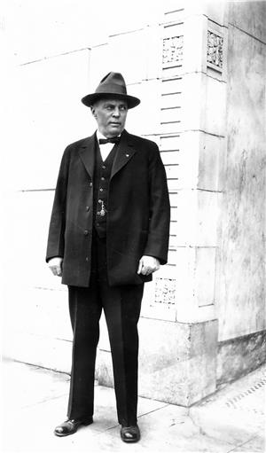
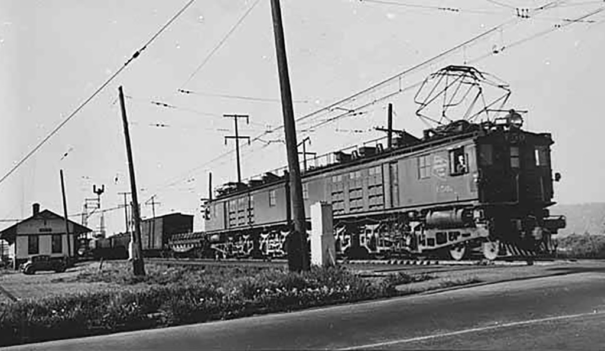
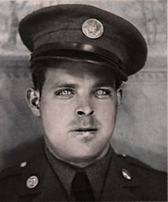

1886–1910Railroad Boom & The Naming of Auburn
The Northern Pacific Railroad reached Auburn in 1883. By 1891 the town incorporated as "Slaughter." In 1893, only two years after incorporation, the name was officially changed to Auburn. Supposedly an influx of settlers from Auburn, New York triggered the change. Some traditions hold that the new name came from The Deserted Village, a poem penned by Irish poet Oliver Goldsmith — its first line reads, "Sweet Auburn! Loveliest village of the plain." West Main Street developed as the working commercial spine serving rail crews, freight workers, and valley farmers. Local merchant and photographer Les Rasmus documented the era.

Otto Bertsch · NP Conductor & Mayor of Auburn · 1924
Milwaukee Road freight train arriving at Auburn depot · 1948
1911Building Constructed
Part of the final wave of downtown wood-frame commercial construction between 1910 and 1913. Original fir floors, high wood plank ceilings, and moldings were installed, all remaining intact today, concealed beneath later improvements. The Nuzum family, prominent Auburn real estate developers, held the block-long parcel before subdivision.
1920s–1930sLodging Era, Railroad Workers
The 1930 Census confirms the building operated as a rooming house for single men employed by the Northern Pacific Railroad. The Depression years were hard on Auburn's merchant community, though rail traffic sustained the block's basic economy. A railroad spike recovered from beneath the building's stairwell connects the structure directly to the men who lived and worked on this line.
1940sCommunity Grocery
The Skaggs family — whose cash-and-carry retail model eventually evolved into Safeway — occupied this building before Frederick Jones. The building served as the central community grocery for East and West Main residents. A 1942 grocery receipt recovered from within the building confirms active WWII-era operation. Japanese immigrant farmers from the surrounding valley, who supplied the store with produce, were forcibly relocated to internment camps in 1942, permanently reshaping Auburn's agricultural economy.
1940–1954Jones Family, From Renter to Owner
The 1940 Federal Census documents Frederick Jones as head of household at 504 West Main, renting at $20/month, occupation listed as retail salesman. He appears on Sheet 3A, Line 1 of Enumeration District 17-2, King County, Auburn Precinct — the first name on the page for this address. By the 1950 Census he is recorded as owner and proprietor. The block became informally known as the Jones Block, a designation that survives in local historical photographs to this day. Frederick Jones was the father of the current owners.

Frederick Jones
Undated DiscoveryArtifacts of Continuous Occupation
Antique bottles, old tools, and historical photographs were recovered from beneath the building, physical evidence of its continuous use across multiple generations. Newspapers dated 1955 were found within the structure. A 1942 grocery receipt confirms active wartime operation.
1954–2020House of Vacuums, 66 Years
The building's longest single-use chapter. The large red-lettered sign became a neighborhood landmark along West Main for generations. Continuous commercial operation through March 2020 — closed during the Covid-19 shutdown — confirms sustained utility as a working storefront across Auburn's most significant commercial transitions.
NowOffered for Redevelopment
The building is offered as-is. Primary value is the parcel, the corridor position, and the retained garage. For a buyer with preservation intent, the physical and archival record supports National Register candidacy and access to federal Historic Tax Credits.